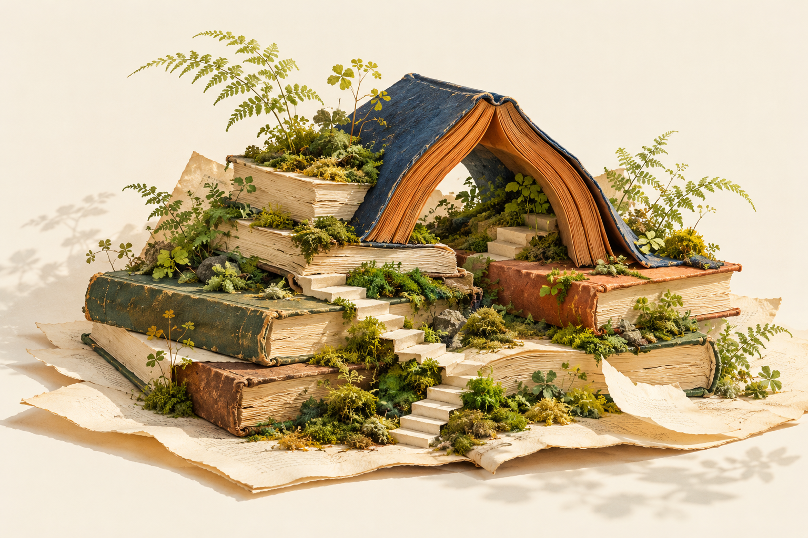

わたしの小さな古本屋 ／ 田中美穂
本をひらく、編集の入口
本屋なのに、苔。
好きなものは、
本棚に収まらない。

倉敷の古書店・蟲文庫。10坪にも満たない店に、古本、苔や羊歯のグッズ、亀などの生きもの。ときには音楽イベントも。
出版社の紹介と、著者の寄稿から
本店をつくるなら、
棚板から。
店を始める話は、大きな理想だけでは進みません。出版社の目次には、開業予算や棚板探し、客の来ない日々が並びます。好きな本を並べるまでにも、並べてからにも仕事がある。まずは、その具体的な手ざわりから。
苔本の話から、
苔の話へ。
苔や羊歯のグッズが、古本と並ぶ店。帳場の日常を綴るこの本にも、店主が偏愛する苔の話が登場します。関心は、本棚の中だけに収まりません。
人との縁店番の途中で、
思いがけない出会い。
店を訪れる人と、一冊の本が出会う。そのめぐりあわせは、店主の思惑を越えていくこともあると田中美穂は自著への寄稿で綴っています。何を売ったかだけでは測れない、店番の時間。その日々が、この本の背景にあります。
本の外の話 ／ 著者が振り返る執筆
成功談には、
まとめなかった。
田中美穂は、この本の企画に、独立を目指す女性を後押しする方向もあったと明かしています。それでも無責任なことは書けないと考え、経験をありのままに伝える形にしたそうです。
店を始めたころは、うまくいかなければやめようと思っていた。しかし続けるほど、何をもって失敗とするのかも分からなくなったと綴ります。好きな仕事を始める話だけでなく、答えを決めきれないまま続ける時間にも目を向けたい一冊です。
店主が、この本について書いたことこの本を、もう少し。
わたしの小さな古本屋
ちくま文庫 ／ 2016年9月7日刊行
240ページ ／ ISBN 9784480433817
この紹介の出典・イラストについて
書誌・作品紹介は、上記の筑摩書房公式作品情報に基づく要約です。公式本文再確認：2026年10月30日。「本屋なのに、苔。」などの見出しや入口の言葉は、本書の題名や本文の引用ではなく編集上の表現です。通読・訪問による体験談ではありません。
人との縁と「本の外の話」は、日本の古本屋掲載の田中美穂の寄稿「自著を語る(74)」に基づきます。掲載日は記載なし。本文確認：2026年10月30日。本書の本文からの引用ではなく、著者が公開の場で説明したことの要約です。
イラストは本・苔・羊歯をモチーフに生成したオリジナルの架空の静物です。実際の蟲文庫の写真や本書の書影ではありません。途中の図は同じイラストの一部を表示しています。
現在の営業・価格・在庫は確認していません。刊行日と情報確認日は別です。画像と出典の共通方針は編集・出典の案内へ。